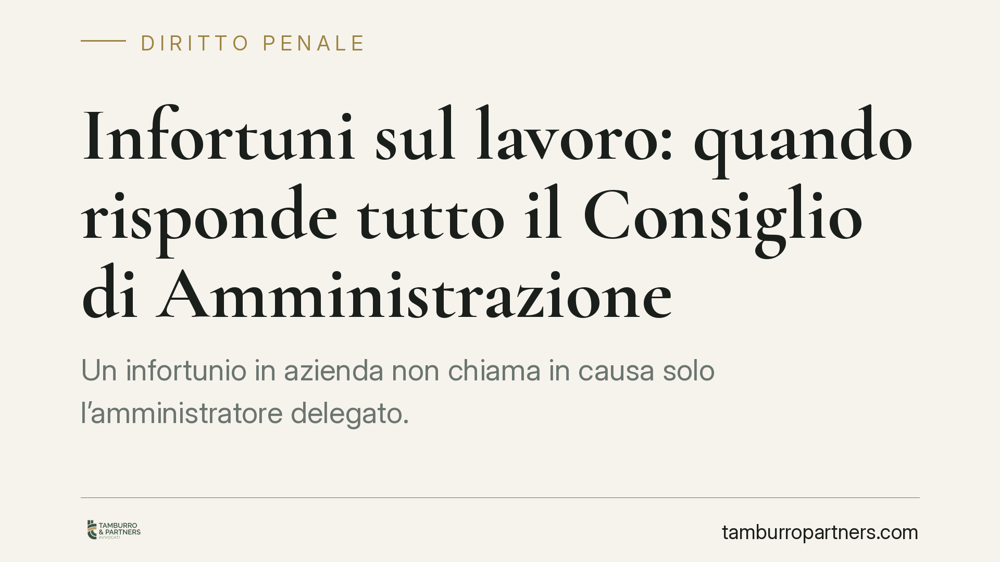

Infortuni sul lavoro: quando risponde tutto il Consiglio di Amministrazione
Un infortunio in azienda non chiama in causa solo l'amministratore delegato. Secondo la Cassazione, in assenza di una delega di funzioni formalizzata, la responsabilità penale per la sicurezza grava su ciascun componente del Consiglio di Amministrazione. E la nomina dell'RSPP non basta a spostare l'obbligo. Un principio che impone alle società di rivedere assetti interni e ripartizioni di competenze.

Il caso
La Corte di Cassazione è tornata su un tema che gli organi societari tendono a sottovalutare: chi risponde, sul piano penale, quando si verifica un infortunio sul lavoro?
La risposta è netta. In assenza di una delega di funzioni valida ed efficace, l'obbligo di garantire la sicurezza dei luoghi di lavoro grava su tutti i componenti del Consiglio di Amministrazione. Non solo sull'amministratore delegato o sul presidente, ma su ogni singolo consigliere.
È un principio che colpisce chi immagina la carica di consigliere come un ruolo puramente formale o di indirizzo. Nella prospettiva penalistica, chi occupa quella posizione assume anche gli obblighi di prevenzione connessi.
Inquadramento normativo
La figura del "datore di lavoro" ai fini della sicurezza è definita dall'art. 2 del D.Lgs. 81/2008 (il Testo Unico sulla salute e sicurezza sul lavoro): è il soggetto titolare del rapporto di lavoro o, comunque, colui che ha la responsabilità dell'organizzazione o dell'unità produttiva con poteri decisionali e di spesa.
Nelle società con organo collegiale, tali poteri appartengono, in origine, all'intero Consiglio di Amministrazione. Ne consegue che gli obblighi indelegabili previsti dall'art. 17 del Testo Unico — la valutazione dei rischi e la nomina del responsabile del servizio di prevenzione e protezione (RSPP) — ricadono su tutti i membri, salvo diversa e formale ripartizione.
Lo strumento per spostare questa responsabilità è la delega di funzioni, disciplinata dall'art. 16 del D.Lgs. 81/2008. Perché sia efficace deve rispettare requisiti stringenti: forma scritta con data certa, attribuzione al delegato di autonomia di spesa, competenza e professionalità adeguate, accettazione espressa. Senza questi elementi, la delega non produce effetti e la responsabilità resta in capo all'organo collegiale.
L'RSPP non esonera i vertici
Un equivoco diffuso riguarda il ruolo dell'RSPP. La sua presenza non trasferisce ai vertici alcuna esenzione da responsabilità.
L'RSPP è un soggetto tecnico con funzione consultiva e di supporto: individua i rischi, elabora misure, propone soluzioni. Ma non è titolare di poteri decisionali né di spesa. La scelta se attuare o meno gli interventi resta ai vertici aziendali.
Per questo la Cassazione esclude che la nomina di un RSPP possa fungere da scudo. Chi ha il potere di decidere e finanziare gli interventi di sicurezza risponde delle omissioni, indipendentemente dalle segnalazioni ricevute dal tecnico.
Implicazioni pratiche
Le conseguenze per chi siede in un CdA sono concrete.
In caso di infortunio con lesioni o esito mortale, l'accertamento penale non si ferma alla figura di vertice. Il pubblico ministero può contestare la responsabilità a ciascun consigliere, chiamandolo a dimostrare l'esistenza di una delega valida o l'assenza di un nesso tra la propria posizione e l'evento.
Questo vale anche per i consiglieri non operativi. La mera qualità di componente dell'organo collegiale, in mancanza di ripartizione formale, è sufficiente a fondare la contestazione.
Sul piano organizzativo, ne deriva l'esigenza di costruire assetti chiari. Una delega generica, verbale o priva di autonomia di spesa non protegge nessuno. Anzi, può generare un falso senso di sicurezza destinato a rivelarsi tale solo nel momento dell'indagine.
Cosa fare in concreto
- Verificate l'esistenza e la validità delle deleghe. Controllate che ogni delega di funzioni sia scritta, datata con certezza, accettata e corredata di reali poteri di spesa e autonomia decisionale.
- Formalizzate la ripartizione di competenze in seno al CdA. Definite per iscritto chi gestisce la sicurezza, evitando sovrapposizioni o zone grigie.
- Distinguete il ruolo dell'RSPP dagli obblighi decisionali. Non affidate al responsabile tecnico funzioni che restano indelegabili ai sensi dell'art. 17.
- Aggiornate il Documento di Valutazione dei Rischi. Assicuratevi che sia attuale, coerente con l'attività reale e che le misure previste vengano effettivamente attuate.
- Documentate l'attività di vigilanza. Conservate verbali, comunicazioni e prove degli interventi adottati: in sede penale la tracciabilità delle decisioni fa la differenza.
Un modello organizzativo solido non elimina il rischio, ma consente di dimostrare la diligenza dei vertici e di attribuire le responsabilità dove effettivamente competono.
Disclaimer
Contributo informativo a cura di Tamburro & Partners - Avv. Giuseppe Tamburro. Non costituisce parere legale.
Ogni condominio ha una storia a sé.
Se gestisci un'amministrazione e vuoi un confronto su una specifica questione condominiale, scrivi allo studio. Ti rispondiamo entro un giorno lavorativo.